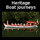
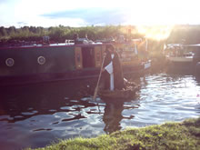
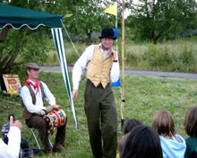
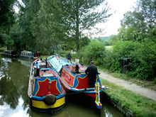
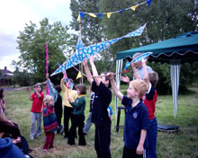
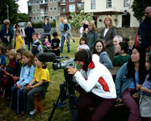
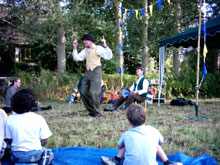
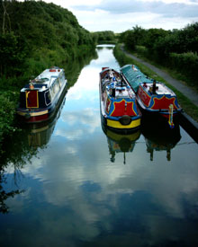
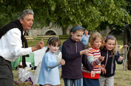
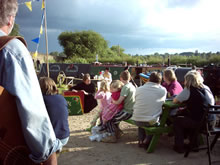

Home | Contact | Picture Gallery | ProjectsSkip Navigation |
 |
 |
 |
 |
 |
 |
 |
 |
View videos clips of our boat journeys
Benji's Rap |
|
Music at Aynho: Jali Fily Cissokho, Jane Griffiths & Johny Fletcher |
|
The Barge Wife |
|
Irene (3 mins) |
|
22 June 2004 |
|
21 June 2004: Launch |
Each track is about one minute in length. These videos have been tested to work with Windows Media Player version 7.1 and above. Mac users may need to download the Player for Mac before they can view the video.








Photograph copyright BigBlade www.bigblade.net

View more photographs in our picture gallery
Oxfordshire Heritage Boat Journeys
Read our press releases.
TWO BOAT JOURNEYS TO OXFORD
Cropredy to Oxford by the Oxford Canal, Henley to Oxford by the Thames. The festival featured two heritage boat journeys, re-creating aspects of canal and river life with performances at overnight stops throughout the week where local people were invited to take part in "open mic" sessions and display lantern images made through an accompanying community participatory workshop programme. The boat journeys met in Sandford-on-Thames on the evening of Friday 25th June for a series of performances celebrating both traditional and contemporary life on the waterways.
On Saturday 26 th June prior to the afternoon performance of Hydrogen Two Oxygen, the water communities of the county linked with boating enthusiasts for a celebratory boat procession on the Isis (the central Oxford section of the Thames). The final stage of the procession in central Oxford involved local community groups accompanied on water vessels by local musicians.
Journey Log
Saturday 26th June
The sun has once again forsaken us ... rain, rain and more rain was what greeted our adventurers on Procession Day. Sunburnt noses and necks gleaned from the rays of the previous day shone like beacons in the gathering gloom that was Saturday. The boats moved away from Sandford-upon-Thames at around 1.30 PM ... the rain came with us .... the boats arrived at Iffley Lock .... so did the rain .... the boats processed from Iffly to Folly Bridge and back several times .... as did the rain. Children gathered at the Isis Tavern to collect paper fish, jelly fish, sharks, dragon flies and frogs ... none of which, I have to add, were waterproof ... the paint dribbled down coats and legs and onto the Salter's Steamers that followed the same route as the procession ... along with the rain. Ah well ... what better way to end a water festival! See you next year!Friday 25th June
The end of the journeys is at hand ... the fickle finger of fate has managed to tickle our boats towards their goal ... The Four Pillars Hotel, Sandford-upon-Thames. And for once the weather was not an issue ... we had sun, blue sky, a few white fluffy clouds that mooched around like overfed cartoon sheep and ... more sun! Fun was had by all as Mel and Ivor Bachelor manouevered Mountbatten and Jellicoe around a couple of 90 degree corners, knocking the odd college barge out of the way ... very gently ... to moor at a very jaunty angle behind the stage which was up and ready to accept the talented folk that had followed our journeys from the beginning. Plover B arrived, a beautiful electric cruiser, Morning Mist and a Canadian Canoe ... and a few other boats joined to complete a veritable watery mish-mash of heritage wood, iron and steel ... and a bit of fibre-glass to boot. All nestled comfortably under the trees and as the sun went down the polished brass glinted in the red rays and the music of Tandara Mandara, Topaz, Tim and Jane, Fily Cissokho and Alexander D Great soothed the savage brows of the audience who had come, armed with polythene sheets, umbrellas, plastic macs, wellingtons, sou'westers, life rafts, bouyancy aids and waterproof food expecting, not beautiful sun and clear skies but our friend and travelling companion ...THE RAIN! Once they had got used to the lack of water falling from the skies the audience settled back and enjoyed a spectacular night of fun and frolics with the assembled talented performers. A strange middle-earth type figure paddled about in a coracle in the stream. Groups of unsuspecting audience members helped to create a nineteenth century tavern to enable the Tale of the Stolen Duck to be told. Ramlin' Rose came amongst us and told us of her life during the war years. Hot dogs and burgers on paper plates and alcoholic beverages in plastic glasses roamed the Four Pillars garden and... fish jumped, mosquitoes hovered, birds twittered, camera shutters clicked and whirred and slowly the moon rose above the trees and the evening came to a warm and satisfied close. The journeys, started a long wet week before, had at last gone to bed ... all that remained was the Saturday Procession.Thursday 24th June
It wasn't a huge journey on the canal from Kidlington to Wolvercote but once again the weather threatened to make it a miserable affair. Clouds, rain, wind ... plagues of frogs ... well, one frog to be precise. A frog of willow, tissue paper, glue and a great deal of paint which had been made by the children of the Grange Primary School, Banbury, very nearly leapt into the canal to join its amphibious friends when a gust of wind unseated it from its position on the bow of Jellicoe ... Mel was the saviour! On Wolvercote Green ... despite twenty two men on the television kicking a bladder (one or two of them not very accurately) the event was a wonderful affair ... we had music, storytelling and a short impromptu piece of theatre from the newly formed and immediately disbanded Wolvercote Theatre Company ... about twenty young people armed with tissue paper fish performed the Deadly Fish Attack on Wolvercote ... to great applause and merry making.The threatened rain didn't appear ... unlike four miles away on the river journey at Iffley Lock, where it cut a wonderful evening short. Plover B was moored a little way away from the action so it was decided to bring it closer ... so it could be the centre of attention once again. All was going well until the engine cut out for no other reason that it made for a dramatic entrance ... or very nearly a dramatic exit. The boat meandered towards the DANGER sign, as if attracted by some sort of magnetic force, it turned and twirled with various crew members shouting helpful things like ... "Jump", "Dive for it", "For goodness sake ... turn left ...", at least it sounded like "for goodness sake" ... eventually all was well as it was brought under control by the brave actions of Matt who leapt onto the island and pulled on the rope for all his worth ... phew! said the crew. The Rap Yard performed a couple of the tracks that they had especially written for the water festival, followed by Matt Sage and the Orchestra of Love ... their last gig before their storming of the Glastonbury Mud Festival. Unfortunately the evening was brought to a close by the rain ... forty people under a gazebo, eight of them with musical instruments threatening to warp and take someones eye out, was too much to bear for too long ... so another leg of our historic journey was brought to a watery end.Wednesday 23rd June
Well, the saga of the canal and river journey continues . our two boats are still nosing their way through more weather than we could reasonably expect for this time of the year. Plover B has made it to Abingdon and Mountbatten and Jellicoe have arrived safely at Kidlington. The Wise Alderman in Kidlington was the scene of much merriment and rejoicing as local performers decided against performing in the Force 6 to 7 Gale that was blowing through the pub's garden, almost uprooting small trees in its wake and performed in the bar instead. Some of the locals were bemused by the influx of performers and poets who took over their normally quiet bar but soon joined in with the storytelling, theatre and music which ensued. On the river, Mark Davies took a small but select audience on a murder walk along the towpath, whilst the intrepid crew erected gazebos and marquees which at times performed like kites threatening to whisk the hapless team off to who knows where. Would an audience turn up at the Abbey Meadows? Would the bands, singers, drum troupes and storytellers be performing to themselves? No! The people of Abingdon didn't let us down . they arrived, huddled and enjoyed the entertainment. The Abingdon Drama Club Juniors performed "The Big Race" . a tale of two bargees who raced from London to Abingdon in wind, rain and . it felt so real to us all! Although the weather is against us the journeys continue . so forget the football and join us tonight at Iffley Lock or Wolvercote Green and see for yourself.Tuesday 22nd June
Well, Mountbatten and Jellicoe, our working boat and butty on the canal, are still battling their way towards Oxford. Ivor and Mel Bachelor, the owner/operators, are cheerfully battening down the hatches in the teeth of gales, rain and thick heavy cloud. The journey, the performances and the day to day business of selling diesel, coal and all your chemical lavatory requirements (not to mention the selling of beautiful traditional canal ware, hand painted by Mel) must go on! Last night the intrepid adventurers reached Thrupp and the Boat Inn. Mel was seen wandering along the canal giving leaflets to all the boaters who had moored up for a quiet night in front of the portable telly. After a moist start in the garden of the Boat Inn, the festivities moved inside to the warmth and the comfort of the bar, where as one would expect a few beverages were consumed. Now wet on the inside as well as the outside the revellers had a brilliant musical and story driven night that was enjoyed by all. On the river Thames, Plover B arrived, rocking and rolling in the eye of the storm, at Culham Lock. The boat, almost a hundred years old had made the voyage from Shillingford safely with Mark Davies, Historian and Author, at the helm. Both were wet. The evening was not looking good . the rain was coming down at every angle it could possibly manage .. The landlubbers and the boat crew got stoutly to work attempting to erect two Gazebos . which were fighting to leap into the river with every gust. At last the Gazebos were up . why? Nobody would arrive on a night like this . the performers would turn up, take a look and then go straight home . the audience would only get as far as looking out of their windows before they decided that Tuesday night telly didn't look so bad after all. But as the rain swirled under the Gazebos and rain dripped down the neck, out of the mist and murk came . yep . audience. About ten damp people arrived, armed with waterproofs and brollies, and proceeded to station themselves under the cover of the trees and the gazebos. The show must go on . and it did, for about an hour or so musicians played and people danced in the rain. But then it all got too silly and everyone decided that the Lion Inn was the only place to be. The end of another perfect day.Monday 21st June
The Heritage Boat Journeys plough on through wind, rain and bright sunshine. On the Canal the evening event at Lower Heyford was a beautiful, relaxing and entertaining event with music brought to us by the honey voiced, talented guitar and harmonica maestro Johnny Fletcher. Jane Griffiths and Colin Fletcher gave us stunning performances with the Celtic Guitar and Fiddle . what a treat that was! Fily Cissokho gave us some stunning songs from Senegal, accompanying himself on the beautiful Kora, a 21 stringed African harp . some people were moved to tears by his delicate and moving tunes. [3Mb] broadband Comedy and storytelling were brought to us by Giles and Benji . the History of the Canal Rap is something to behold. The Lower Heyford Young Theatre Company also performed beautifully a story called "The Attack of the deadly Jellyfish". The evening, by the lift bridge at the bottom of Mill Lane, with the sun setting between the trees, was a perfect end to a perfect day. We even had members of the public who came along to be enchanted and enthralled . over sixty Lower Heyfordians and boating types joined us . despite the footy. A fabulous night was had by all! On the River the journey halted for a pleasant evening by the Thames at the Shillingford Bridge Hotel . again a perfect setting for a relaxed evening by the river. The team struggled to put up Gazebos and Bunting in the driving rain, wondering if it was all worthwhile, it was! The sun shone, Shillingfordians turned up and a beautiful evening of entertainment ensued. Stunning harmonies were enjoyed by the audience from the honeyed tongues of Abbie and Claude playing their own brand of contemporary folk music. The mercurial songwriter and performer Justin Gibson and the beautiful songs of Kate Garret with cello and percussion rounded up the musical side of the evening. The audience enjoyed the African stories of Jack Kinobe until the sun started to set behind the trees . glinting off the water creating a magical end to another successful evening.Sunday 20th June
The performers reached Wallingford on Sunday evening along the Thames with only a canoe in attendance - Plover B still stuck at Mapledurham for repairs much to everyone's frustration. But it didn't stop the enthusiasm of St John's School Attack of the Deadly Jellyfish' and in a bit of a different vein, the Eastern European folk music of Tandara Mandara. Wallingford's very own dub poet joined in. The children also loved playing in the newly mown grass by the river. Sustainable Wallingford also came along. Many thanks to the Thameside Mansions, not least for mowing the lawn. On the canal the boats reached Aynho Wharf without drama or setback during the voyage. All very orderly. Mountbatten and Jellicoe are displaying a wide range of canal painted ware - and the festival's very own 4 foot frog. It was canal history night with The Tale of the Stolen Duck ( a short history of the Beasleys and Bossums boatbuilders and their clans) and the History of the Canal rap from Benji and Giles [3Mb] broadband , and Kate Saffin's Tale of Ramblin Rose. Chris Parke joined the boats with his coracle for the evening.Saturday 19th June
On Saturday 19th June the Oxfordshire Heritage Boat journeys launched.The day started with a beautiful but chilly dawn over Port Meadow in Oxford for the formal opening ceremony of the Journeys and of the Oxford Open Water Festival which they are part of. At 9am the Lord Lieutenant and High Sherriff of Oxfordshire boarded The Royal Thamesis (see below for further details) at The Trout Inn at Wolvercote with the local press and the video archivists in attendance. The boat is a reconstruction of Queen Mary's Royal Barge from 1689. The boat was then rowed along The Thames through Port Meadow, past Osney Lock, past Christ Church Meadow to Iffley Lock and then returned to near the City Centre along the Cherwell. The boat was rowed by members of City Barge and the City of Oxford rowing club dressed splendidly in white with red tabards and black peaked caps. Around a thousand people turned out at various points along the journey to wave, admire and cheer the boat on its way. Following the opening ceremony the two Journeys across Oxfordshire were launched at Cropredy, in the north of the county, on the Oxford Canal, and at Henley in the south east of the county along the River Thames. At Cropredy the Winding Hole was crossed with school children, musicians and storytellers ready to do their bit to send the boats Mountbatten and Jellicoe, and their accompanying 'fleet' on its way. At 11.55 the shone and all looked bright for the voyage. But at noon when the launch was due to happen the heavens opened so between downpours and brighter moments this boats were sent on their way with a performance relating to the history of the canal from pupils of Cropredy school, tales of the waterways from boater Kate Saffin, and canal resident performances from Tim Christian, Jane Rouse and Benji and Giles Shearing. In Banbury the evening performance next to the canal in the town centre attracted a good audience for The Gekos, dub poet Natty Mark, canal residents Benji and Giles and the pupils of The Grange Primary School. At Henley the weather was kinder and the launch took place in a chill breeze but pleasant sunshine. The boat was launched with music from Dissy, Mark Handley, storyteller Jack Kinobe and drummers from Henley. The boat Plover B built in the 1950's then went on its way - a longish haul up to Goring. The weather may have been better than the canal but the technology wasn't. The engine was overheating so Plover B had to stop at Mapledurham for an engineer to check it out. The performance at Goring gathered at the riverside and as rain threatened retreated to the local pub to continue. Saturday evening performers came for Goring Unplugged with two storytelling sections by African storyteller Jack Kinobe. Look out on Monday for the first video reports from the journey on the website.
BOATS WITH TALES...
Tales of times past when the water was a working industrial and trade route. Tales of times when the rivers flooded. Tales of lockkeepers and canal folk. Romantic stories of river life. Each evening the boats moored up and spilled out their cargo of storytellers, singers, historians....and surprises. The boat crews were joined by local people to tell and be told stories of life on and by the water. Local residents at each of the stops were invited to let the history of the Oxfordshire rivers and canals wash over them and join in a relaxed evening by their river or canal.
Creative Director : Clive Holland
Production Managers : Graeme Merifield/Matt Sage
Community Co-ordinator : Sue Evans
Artist Co-ordinator : Aurelian Koch
The Oxfordshire Heritage Boat Journeys are
supported by the Local Heritage Initiative
with the Nationwide Building Society.